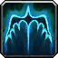
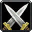
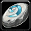

Alliance - Stranglethorn Vale (41-42)
-

Booty Bay
-
Tran'rek
From Krazek in the Inn (2nd Floor)
-
Zanzil's Secret
From Crank Fizzlebub in the Inn.
-
Booty bay
-
Akiris by the Bundle (Part 1)
From Privateer Bloads next to the Bank.
-
Stranglethorn Fever
At the half-boat
-
Scaring Shaky
In the house opposite the upside-down half-boat.
-
The Bloodsail Buccaneers (Part 1)
From First Mate Crazz just past the "Old Port Authority" building (First big building when getting off the Boat).
-
The Bloodsail Buccaneers (Part 1)
On top of one of the barrels
- 
-

Stranglethorn Fever
Kill gorillas for a fang, take it to the troll in the cave to the north (35,60). Defend him, the last gorrila will drop your quest item.
-
Scaring Shaky
Back in Booty Bay, at "Shaky" Philippe on the pier.
-
The Bloodsail Buccaneers (Part 2)
At First Mate Crazz a bit further towards the Inn.
-
Akiris by the Bundle (Part 1)
At Privateer Bloads next to the bank.
-
Up to Snuff
From Deeg on the 2nd floor of the Inn.
-
The Bloodsail Buccaneers (Part 3)
At Fleet Master Seahorn on the 2nd Floor of the Inn.
-
Return to MacKinley
At "Sea Wolf" MacKinley in the house right next to the Inn.
-
Keep An Eye Out
From Dizzy One-Eye near the Booty Bay blacksmith (Left when entering Booty Bay from the tunnel).
-
The Bloodsail Buccaneers (Part 4)
From the Booty Bay exit head east to the coast, then south. Items can be found at the two camps (30,81) (27,83), and in a rowboat (28,83).
-
Keep An Eye Out
Kill Bloodsails
-
Up to Snuff
Kill Bloodsails
-
Voodoo Dues
Run north to Ruins of Jubuwal (33,51), kill Jon-Jon the Crow and Maury "Club Foot" Wilkins. Run south a tad (33,53) and then east to Ruins of Aboraz (40,57), kill Chucky "Ten Thumbs"
-
Zanzil's Secret
Kill the trolls, but avoid Zanzil
-

Booty Bay
-
Zanzil's Secret
In the inn.
-
Up to Snuff
Upstairs in the inn.
-
The Bloodsail Buccaneers (Part 4)
At Fleet Master Seahorn, 2nd Floor of the Inn.
-
Voodoo Dues
At "Sea Wolf" MacKinley (First house next to the Inn). Skip the follow-up.
-
Keep An Eye Out
At Dizzy One-Eye outside the smithy's.
Download the TourGuide addon for free at
WoW Interface
 Help feed a poor starving bear cub!
Help feed a poor starving bear cub!
 Tooltips and maps powered by Wowhead
Tooltips and maps powered by Wowhead

Alliance
- Dun Morogh (1-11)
- Elwynn Forest (1-12)
- Azuremyst Isle (1-12)
- Bloodmyst Isle (12-20)
- Darkshore (20-21 Draenei)
- Teldrassil (1-12)
- Darkshore (12-17)
- Loch Modan (17-18)
- Redridge Mountains (18-20)
- Darkshore (20-21)
- Ashenvale (22-24)
- Wetlands (25-27)
- Redridge Mountains (27-28)
- Duskwood (28-29)
- Ashenvale (29-30)
- Wetlands (30-31)
- Hillsbrad Foothills (31-32)
- Desolace (33-34)
- Stranglethorn Vale (36-37)
- Dustwallow Marsh (37-38)
- Stranglethorn Vale (38-40)
- Badlands (40-41)
- Stranglethorn Vale (41-42)
- Tanaris (43)
- Feralas (43-45)
- The Hinterlands (46-47)
- Feralas (47)
- Tanaris (47-48)
- Blasted Lands (49-50)
- Searing Gorge (50-51)
- Kalimdor (51)
- Un'Goro Crater (51-52)
- Azshara (52-53)
- Felwood (53-54)
- Winterspring (54-55)
- Burning Steppes (55-56)
- Silithus (56)
- Western Plaguelands (56-57)
- Eastern Plaguelands (57-58)
- Western Plaguelands (58)
- Eastern Plaguelands (58)
- Western Plaguelands (58-59)
- Hellfire Peninsula (60-62)
- Zangarmarsh (62-63)
- Terokkar Forest (64-65)
- Nagrand (65-66)
- Blade's Edge Mountains (66-67)
- Netherstorm (67-70)
- Shadowmoon Valley (70)

Horde
- Eversong Woods (1-13)
- Ghostlands (13-20)
- Tirisfal Glades (1-12)
- Mulgore (1-12)
- Durotar (1-12)
- The Barrens (12-20)
- The Barrens (20)
- Stonetalon Mountains (20-21)
- The Barrens (22-23)
- Stonetalon Mountains (23-25)
- The Barrens (25)
- Thousand Needles (25-26)
- Ashenvale (26-27)
- Stonetalon Mountains (27)
- Thousand Needles (27-29)
- Hillsbrad Foothills (29-30)
- Arathi Highlands (30)
- Stranglethorn Vale (30-31)
- Thousand Needles (31-32)
- Desolace (32-34)
- Stranglethorn Vale (34-36)
- Arathi Highlands (36-37)
- Alterac Mountains (37)
- Thousand Needles (37)
- Dustwallow Marsh (37-38)
- Stranglethorn Vale (39-40)
- Badlands (40-41)
- Swamp of Sorrows (41-42)
- Stranglethorn Vale (42-43)
- Dustwallow Marsh (43-44)
- Tanaris (44-45)
- Feralas (45-46)
- Azshara (46-47)
- Stranglethorn Vale (47)
- Searing Gorge (47-48)
- Swamp of Sorrows (48-49)
- Tanaris (49-50)
- Azshara (50)
- The Hinterlands (50-51)
- Un'Goro Crater (51-53)
- Burning Steppes (53-54)
- Felwood (54)
- Winterspring (54-55)
- Western Plaguelands (56)
- Eastern Plaguelands (56-57)
- Western Plaguelands (57-59)
- Hellfire Peninsula (60-61)
- Zangarmarsh (61-63)
- Terokkar Forest (63-65)
- Nagrand (65-67)
- Blade's Edge Mountains (67-68)
- Netherstorm (68-69)
- Shadowmoon Valley (69-70)